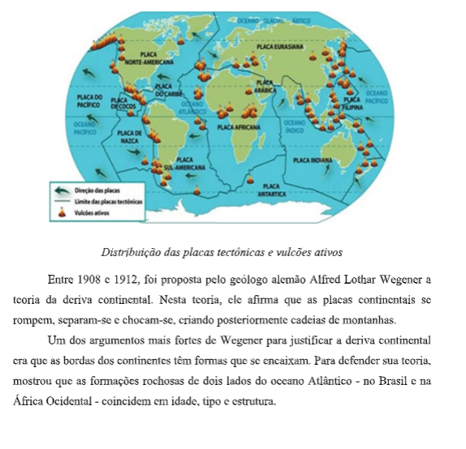
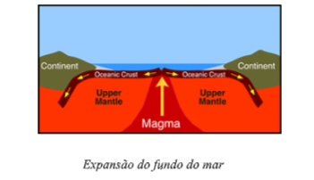
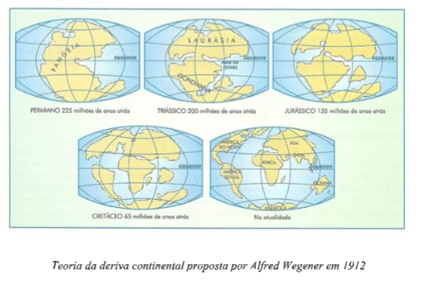
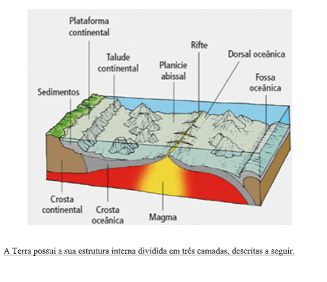

Capítulo 3: Sistemas Agrícolas
Questão:O que são sistemas agrícolas e quais os principais tipos? Sistemas agrícolas são formas diferentes de praticar a agricultura. O modo ou a forma de praticar a agricultura varia muito de um lugar para outro, por vários motivos: • condições socioeconômicas. • diferenças técnicas. • diferenças naturais.
Contextualizando – Indústria Calçadista e materiais agrícolasAs marcas de tênis estão começando a encontrar novas formas de atrair os consumidores. Seja na forma de produzir os calçados ou então nos materiais utilizados. E agora foi a vez da Reebok. Um tênis feito à base de plantas foi lançado nessa semana nos Estados Unidos, de acordo com o site Running Competitor. Ele é feito de algodão e milho com o objetivo de ser mais sustentável. Foi criado em parceria com o fabricante de soluções biológicas, DuPont Tate & Lyle Bio Products.
  Nas regiões temperadas, onde se localizam principalmente os países desenvolvidos, é possível distinguir dois sistemas agrícolas:
a) Sistema intensivo científico:
Desenvolve-se principalmente em países europeus, apresentando as seguintes características: • grande produtividade; • uso intensivo do solo, com emprego correto de adubos químicos a fim de evitar o seu esgotamento; • mecanização moderada, ou seja, uso moderado de máquinas para não provocar a compactação (amassamento) do solo, o que impede a penetração de oxigênio e a infiltração da água; • seleção de sementes e mudas; • rotação de culturas, ou seja, uso do solo com alternação (troca) de diferentes culturas durante três anos. A rotação de culturas oferece maior quantidade de produtos e diminui o esgotamento do solo.
b) Agricultura comercial mecanizada:
Desenvolvem-se principalmente nos EUA e Canadá. Caracteriza-se por: • apresentar grande produtividade; • utilização de grandes propriedades especializadas no cultivo de determinados produtos; • utilização intensiva de máquinas e conhecimentos agronômicos e científicos. Nos EUA essas áreas são chamadas de belts (cinturões), como o com belt (cinturão do milho), wheat belt (cinturão do trigo) e o cotton belt (cinturão do algodão).
Olhar geográfico: Exercícios
Assinale V (Verdadeiro) ou F (Falso):
